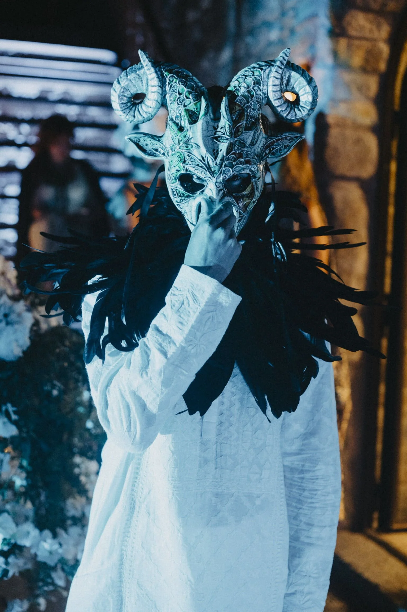

More art, more connection, more life - Beyond is a unique gathering for seekers of meaning & magic
In an increasingly disconnected world, spaces of true connection and presence are rare. Beyond exists to create, nurture and protect these spaces. We’re here to challenge conventional ideas and to explore deeper truths. Beyond is more than a festival... It’s a community in which those who have always felt there was something more, something beyond, connect to find purpose, meaning and magic.
– About beyond
August 26th-29th 2021
Cappadocia, Turkey
Deer Jade’s melodic music will take you on a mystical journey through time and space as a portal to the depths of your soul, blurring the lines between our planet earth, the cosmos and ourselves… enter the NOW and awaken to your divinity.
The beyond community is about bringing together people who dare to dream that it is possible to change the world with a smile on your face. We hand pick each member, making sure each of them is a valuable addition to the community and the purpose behind it - leaving a lasting impact beyond the event by positively imprinting on the local economy, community and environment.
At Beyond, we celebrate the new perspectives that each place, piece of art, and musical experience can offer. Our programming is carefully designed to highlight the beauty of each place we go to through immersive storytelling, traditional knowledge preservation and reflection on region’s mythology at our dreamy, magical night events.
One of the best ways to experience a culture is through its cuisine. We take a fresh look at the traditional dishes of the region adding a healthy, modern twist. You also get to really get to know the people you support as a member of the community through food workshops taught by locals engaged at the Beyond Social Impact programme.
We incorporate meaningful wellness practices and healing rituals into everything we do. Beyond breathwork and meditation, we hold talks and workshops that are designed to allow you to carve out a new space for yourself and to carry this back home with you. At Beyond, we encourage our guests to explore ways of being and connecting to the world-ways that are more dynamic, more physically, mentally and spiritually fulfilling.
We take the impact that we leave behind very seriously. Founded by women, Beyond aims at helping women and youth in need of the regions we plug into. We work closely with local government and social good organisations to identify challenges of the region and raise funds in order to tackle them. We’re also plastic free!

Travel
Tickets
Event
Cappadocia, Turkey
There are multiple flights to Kayseri and Nevsehir airports from Istanbul.
Your transfer is included in the price. As soon as you book your
flight please
e-mail info@whatisthebeyond.com
and we’ll take it from there.
Absolutely! The hotel is offering special rates for anyone wanting to extend their stay Please email us for more details or book and extra day on a ticket page.
We will be sending out a guidebook together with special rates at partner hotels.
Turkey doesn’t require a visa for most countries. Please check entry requirements to be on the safe side.